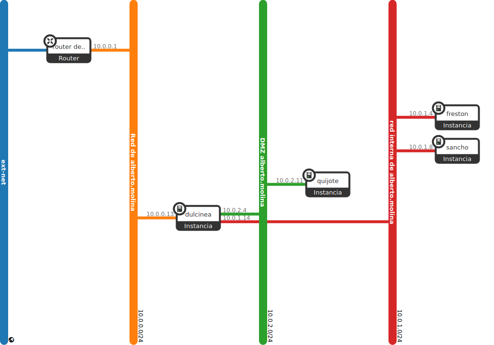
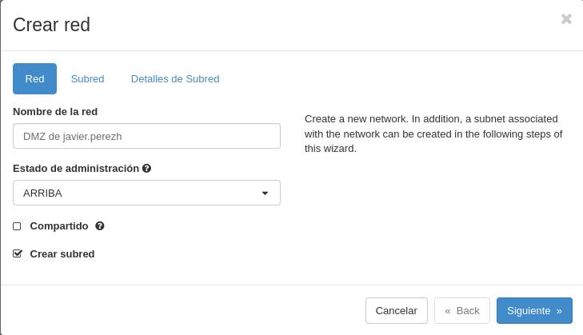
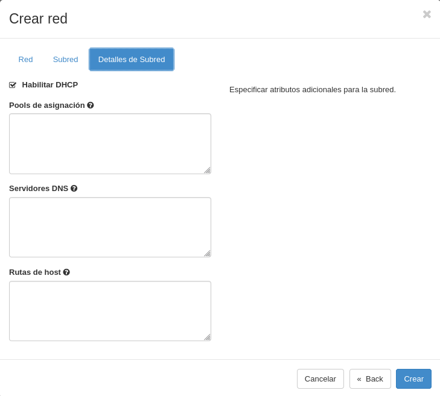
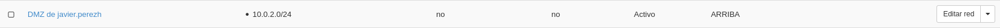
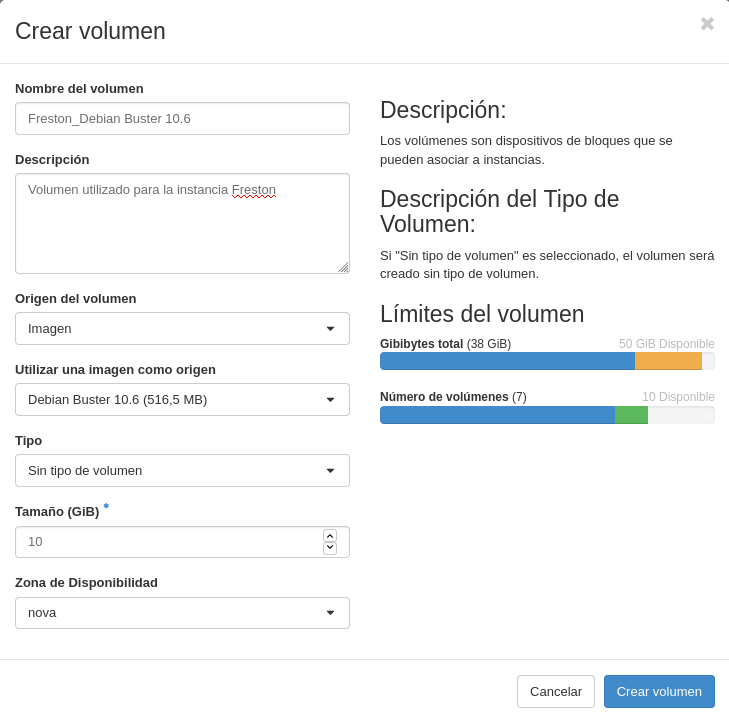
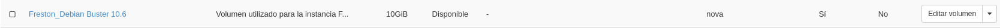
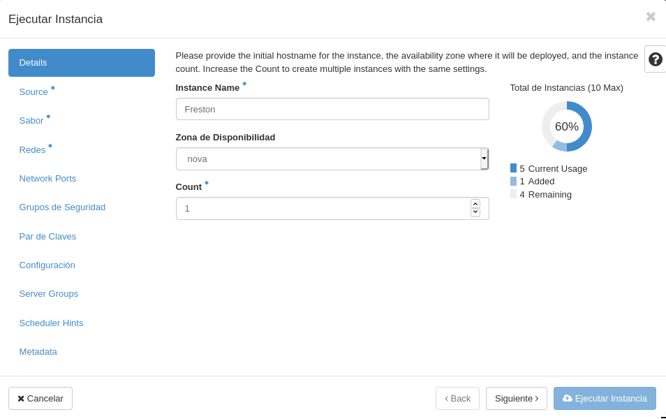
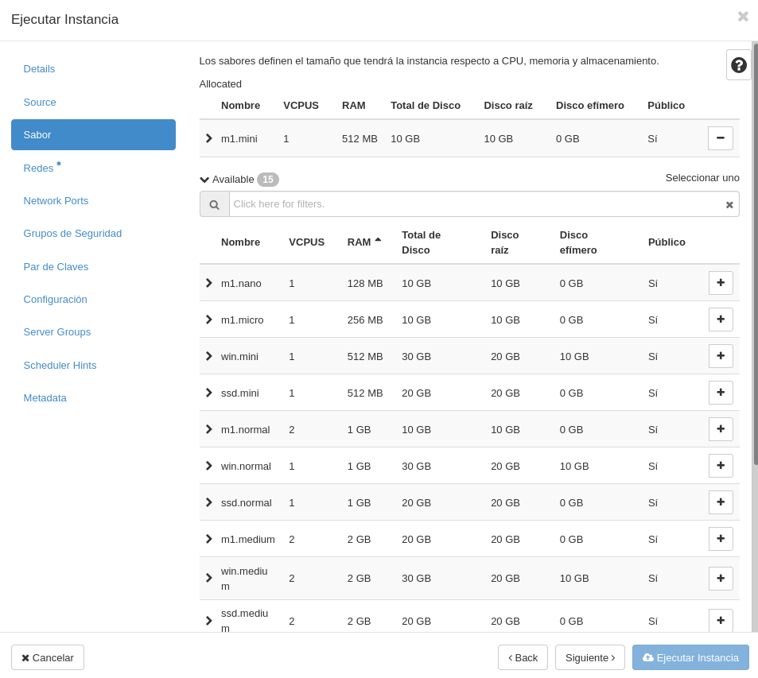
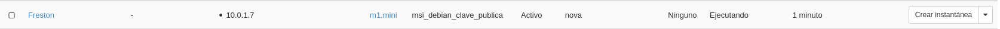

<!DOCTYPE html>
<html lang="es">

<head>
            <meta charset="utf-8">
        <meta http-equiv="X-UA-Compatible" content="IE=edge">
        <meta name="viewport" content="width=device-width, initial-scale=1">


        <title>Modificación del escenario de trabajo en OpenStack | Javier Pérez Hidalgo</title>

        <!-- Bootstrap Core CSS -->
        <link href="/theme/css/bootstrap.min.css" rel="stylesheet">

        <!-- Custom CSS -->
        <link href="/theme/css/clean-blog.min.css" rel="stylesheet">

        <!-- Code highlight color scheme -->
            <link href="/theme/css/code_blocks/darkly.css" rel="stylesheet">


        <!-- Custom Fonts -->
        <link href="https://maxcdn.bootstrapcdn.com/font-awesome/4.7.0/css/font-awesome.min.css" rel="stylesheet" type="text/css">
        <link href='https://fonts.googleapis.com/css?family=Lora:400,700,400italic,700italic' rel='stylesheet' type='text/css'>
        <link href='https://fonts.googleapis.com/css?family=Open+Sans:300italic,400italic,600italic,700italic,800italic,400,300,600,700,800' rel='stylesheet' type='text/css'>

        <!-- HTML5 Shim and Respond.js IE8 support of HTML5 elements and media queries -->
        <!-- WARNING: Respond.js doesn't work if you view the page via file:// -->
        <!--[if lt IE 9]>
            <script src="https://oss.maxcdn.com/libs/html5shiv/3.7.0/html5shiv.js"></script>
            <script src="https://oss.maxcdn.com/libs/respond.js/1.4.2/respond.min.js"></script>
        <![endif]-->


        <meta name="description" content="En este post voy a realizar modificaciones sobre un escenario de OpenStack que fue creado anteriormente y cuya explicación se encuentra...">

        <meta name="author" content="Javier Pérez Hidalgo">

        <meta name="tags" content="OpenStack">

	                <meta property="og:locale" content="">
		<meta property="og:site_name" content="Javier Pérez Hidalgo">

	<meta property="og:type" content="article">
            <meta property="article:author" content="/author/javier-perez-hidalgo.html">
	<meta property="og:url" content="/modificacion-del-escenario-de-trabajo-en-openstack.html">
	<meta property="og:title" content="Modificación del escenario de trabajo en OpenStack">
	<meta property="article:published_time" content="2020-12-12 00:00:00+01:00">
            <meta property="og:description" content="En este post voy a realizar modificaciones sobre un escenario de OpenStack que fue creado anteriormente y cuya explicación se encuentra...">

            <meta property="og:image" content="theme/images/banner-hlc.jpg">
</head>

<body class="article-modificacion-del-escenario-de-trabajo-en-openstack">

    <!-- Navigation -->
    <nav class="navbar navbar-default navbar-custom navbar-fixed-top">
        <div class="container-fluid">
            <!-- Brand and toggle get grouped for better mobile display -->
        <!--    <div class="navbar-header page-scroll">
                <button type="button" class="navbar-toggle" data-toggle="collapse" data-target="#bs-example-navbar-collapse-1">
                    <span class="sr-only">Toggle navigation</span>
                    <span class="icon-bar"></span>
                    <span class="icon-bar"></span>
                    <span class="icon-bar"></span>
                </button>-->
                <a class="navbar-brand" href="/">Inicio</a>
                <a class="navbar-brand" href="/categories">Categorías</a>
                <a class="navbar-brand" href="/authors">Sobre mí</a>

            </div>

            <!-- Collect the nav links, forms, and other content for toggling -->
            <div class="collapse navbar-collapse" id="bs-example-navbar-collapse-1">
                <ul class="nav navbar-nav navbar-right">

                </ul>
            </div>
            <!-- /.navbar-collapse -->
        </div>
        <!-- /.container -->
    </nav>

    <!-- Page Header -->
        <header class="intro-header" style="background-image: url('/theme/images/banner-hlc.jpg')">
        <div class="container">
            <div class="row">
                <div class="col-lg-8 col-lg-offset-2 col-md-10 col-md-offset-1">
                    <div class="post-heading">
                        <h1>Modificación del escenario de trabajo en OpenStack</h1>
                        <span class="meta">Publicado por
                                <a href="/author/javier-perez-hidalgo.html">Javier Pérez Hidalgo</a>
                             el sáb 12 diciembre 2020
                        </span>
                        
                    </div>
                </div>
            </div>
        </div>
    </header>

    <!-- Main Content -->
    <div class="container">
        <div class="row">
            <div class="col-lg-8 col-lg-offset-2 col-md-10 col-md-offset-1">
    <!-- Post Content -->
    <article>
        <p><strong>En este <em>post</em> voy a realizar modificaciones sobre un escenario de <em>OpenStack</em> que fue creado anteriormente y cuya explicación se encuentra en <a href="https://javierpzh.github.io/creacion-del-escenario-de-trabajo-en-openstack.html">este post</a>, por si quieres saber más al respecto.</strong></p>
<p><strong>Vamos a modificar el escenario que tenemos actualmente en OpenStack para que se adecúe a la realización de todas las prácticas en todos los módulos de 2º, en particular para que tenga una estructura más real a la de varios equipos detrás de un cortafuegos, separando los servidores en dos redes: red interna y DMZ. Para ello vamos a reutilizar todo lo hecho hasta ahora y añadiremos una máquina más: Frestón</strong></p>
<p></p>
<h4>1. Creación de la red DMZ:</h4>
<ul>
<li><strong>Nombre: DMZ de (nombre de usuario)</strong></li>
<li><strong>10.0.2.0/24</strong></li>
</ul>
<p>Vamos a crear una nueva red, en esta caso, una <strong>red DMZ</strong>, que se situará entre la red interna y la externa.</p>
<p>Para crearla, nos dirigimos hacia nuestro panel de administración de <em>OpenStack</em> y nos situamos en la sección de <strong>Redes</strong>. Una vez aquí, <em>clickamos</em> en el botón llamado <strong>+ Crear red</strong>, y se nos abrirá un menú, donde debemos indicar las características de la red que queremos crear:</p>
<p>En el primer apartado de este asistente, indicamos el nombre que poseerá nuestra nueva red:</p>
<p></p>
<p>En segundo lugar, indicamos las direcciones de red que abarcará, y deshabilitaremos la puerta de enlace ya que no nos va hacer falta debido a que vamos a poner a <em>Dulcinea</em> como <em>gateway</em>:</p>
<p></p>
<p>Por último, vamos a dejar marcada la opción de <strong>Habilitar DHCP</strong> que viene de manera predeterminada, para que de esta forma, nos dé una dirección IP de manera automática cuando conectemos una instancia.</p>
<p></p>
<p>Hecho esto, ya tendríamos nuestra red DMZ creada, como podemos observar:</p>
<p></p>
<p>Hemos finalizado este primer ejercicio.</p>
<h4>2. Creación de las instancias:</h4>
<ul>
<li>
<p><strong>freston:</strong></p>
<ul>
<li><strong>Debian Buster sobre volumen de 10GB con sabor m1.mini</strong></li>
<li><strong>Conectada a la red interna</strong></li>
<li><strong>Accesible indirectamente a través de dulcinea</strong></li>
<li><strong>IP estática</strong></li>
</ul>
</li>
</ul>
<p>Antes de crear la propia instancia en sí, vamos a crear el volumen sobre el que posteriormente generaremos la instancia <strong>freston</strong>. Para ello he creado un volumen con estas preferencias:</p>
<p></p>
<p>Una vez ha terminado el proceso de creación del nuevo volumen, obtenemos como resultado:</p>
<p></p>
<p>Y ahora, un detalle importante que hay que tener en cuenta antes de realizar el lanzamiento de la nueva instancia es, que si recordamos, a la <strong>red interna</strong>, le deshabilitamos el <strong>servidor DHCP</strong>, por lo que si ahora generamos esta nueva instancia perteneciente a esta red, no adquirirá ninguna dirección mediante <em>DHCP</em>, por lo que será inaccesible, porque recordemos que a esta máquina también se accederá a través de <em>Dulcinea</em>. Por tanto, vamos a habilitar el servidor <em>DHCP</em> de la red interna.</p>
<p>Ahora sí, es momento de crear la nueva instancia.</p>
<p>Para crearla, nos dirigimos hacia nuestro panel de administración de <em>OpenStack</em> y nos situamos en la sección de <strong>Instancias</strong>. Una vez aquí, <em>clickamos</em> en el botón llamado <strong>+ Lanzar instancia</strong>, y se nos abrirá un menú, donde debemos indicar las características de la instancia que queremos crear:</p>
<p>En el primer apartado de este asistente, indicamos el nombre que poseerá nuestra nueva instancia:</p>
<p></p>
<p>Ahora establecemos que el origen de arranque sea el volumen creado previamente:</p>
<p></p>
<p>Como <strong>Sabor</strong> indicamos que tenga un <strong>m1.mini</strong>.</p>
<p></p>
<p>Y por último, le asignamos la red a la que va a pertenecer esta máquina.</p>
<p></p>
<p>Aquí podemos ver como hemos creado esta instancia correctamente y que pertenece a la red interna, ya que posee una dirección <strong>10.0.1.6</strong></p>
<p></p>
<p>Vamos a probar a acceder a <strong>freston</strong> a través de <em>Dulcinea</em>:</p>
<pre>
debian@dulcinea:~$ ssh debian@10.0.1.6
The authenticity of host '10.0.1.6 (10.0.1.6)' can't be established.
ECDSA key fingerprint is SHA256:uR1IwMruxlhVJzsAB7UuqHlyR7r+6xqyVhwFXxvX6PM.
Are you sure you want to continue connecting (yes/no)? yes
Warning: Permanently added '10.0.1.6' (ECDSA) to the list of known hosts.
Linux freston 4.19.0-11-cloud-amd64 #1 SMP Debian 4.19.146-1 (2020-09-17) x86_64

The programs included with the Debian GNU/Linux system are free software;
the exact distribution terms for each program are described in the
individual files in /usr/share/doc/*/copyright.

Debian GNU/Linux comes with ABSOLUTELY NO WARRANTY, to the extent
permitted by applicable law.

debian@freston:~$ ip a
1: lo: <LOOPBACK,UP,LOWER_UP> mtu 65536 qdisc noqueue state UNKNOWN group default qlen 1000
    link/loopback 00:00:00:00:00:00 brd 00:00:00:00:00:00
    inet 127.0.0.1/8 scope host lo
       valid_lft forever preferred_lft forever
    inet6 ::1/128 scope host
       valid_lft forever preferred_lft forever
2: eth0: <BROADCAST,MULTICAST,UP,LOWER_UP> mtu 8950 qdisc pfifo_fast state UP group default qlen 1000
    link/ether fa:16:3e:4a:d0:53 brd ff:ff:ff:ff:ff:ff
    inet 10.0.1.6/24 brd 10.0.1.255 scope global dynamic eth0
       valid_lft 86277sec preferred_lft 86277sec
    inet6 fe80::f816:3eff:fe4a:d053/64 scope link
       valid_lft forever preferred_lft forever
debian@freston:~$
</pre>

<p>Vemos como efectivamente hemos accedido a <strong>freston</strong>.</p>
<p>Es el momento de realizar las configuraciones necesarias en esta nueva máquina.</p>
<p>En primer lugar vamos a asignarle una <strong>dirección IP estática</strong>.</p>
<h4>3. Modificación de la ubicación de quijote</h4>
<ul>
<li><strong>Pasa de la red interna a la DMZ y su direccionamiento tiene que modificarse apropiadamente</strong></li>
</ul>
    </article>

        <div class="tags">
            <p><strong><a href="/tags">tags:</a></strong> <a href="/tag/openstack.html">OpenStack</a></p>
        </div>

    <hr>

            </div>
        </div>
    </div>

    <hr>

    <!-- Footer -->
    <footer>
        <div class="container">
            <div class="row">
                <div class="col-lg-8 col-lg-offset-2 col-md-10 col-md-offset-1">
                    <ul class="list-inline text-center">
                            <li>
                                <a href="https://www.instagram.com/javierpzh/">
                                    <span class="fa-stack fa-lg">
                                        <i class="fa fa-circle fa-stack-2x"></i>
                                        <i class="fa fa-instagram fa-stack-1x fa-inverse"></i>
                                    </span>
                                </a>
                            </li>
                            <li>
                                <a href="https://twitter.com/jperezhid_">
                                    <span class="fa-stack fa-lg">
                                        <i class="fa fa-circle fa-stack-2x"></i>
                                        <i class="fa fa-twitter fa-stack-1x fa-inverse"></i>
                                    </span>
                                </a>
                            </li>
                            <li>
                                <a href="https://github.com/javierpzh">
                                    <span class="fa-stack fa-lg">
                                        <i class="fa fa-circle fa-stack-2x"></i>
                                        <i class="fa fa-github fa-stack-1x fa-inverse"></i>
                                    </span>
                                </a>
                            </li>
                            <li>
                                <a href="https://www.facebook.com/javier.perezhidalgo.904">
                                    <span class="fa-stack fa-lg">
                                        <i class="fa fa-circle fa-stack-2x"></i>
                                        <i class="fa fa-facebook fa-stack-1x fa-inverse"></i>
                                    </span>
                                </a>
                            </li>
                            <li>
                                <a href="mailto:javierperezhidalgo01@gmail.com">
                                    <span class="fa-stack fa-lg">
                                        <i class="fa fa-circle fa-stack-2x"></i>
                                        <i class="fa fa-envelope-square fa-stack-1x fa-inverse"></i>
                                    </span>
                                </a>
                            </li>
                    </ul>
<p class="copyright text-muted">
    Blog creado por <a href="http://www.instagram.com/javierpzh/">Javier Pérez Hidalgo</a>,
    con la utilización de <a href="https://blog.getpelican.com/">Pelican</a>. <br />        &copy;  Javier Pérez Hidalgo
</p>                </div>
            </div>
        </div>
    </footer>

    <!-- jQuery -->
    <script src="/theme/js/jquery.min.js"></script>

    <!-- Bootstrap Core JavaScript -->
    <script src="/theme/js/bootstrap.min.js"></script>

        <!-- Custom Theme JavaScript -->
        <script src="/theme/js/clean-blog.min.js"></script>

</body>

</html>